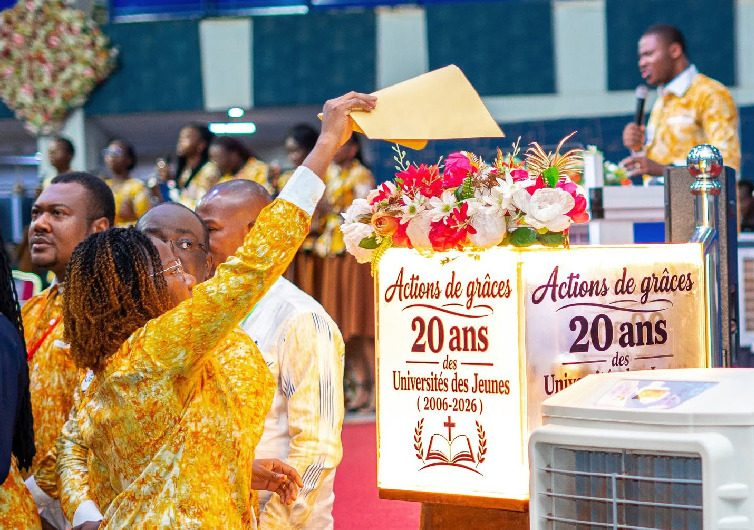
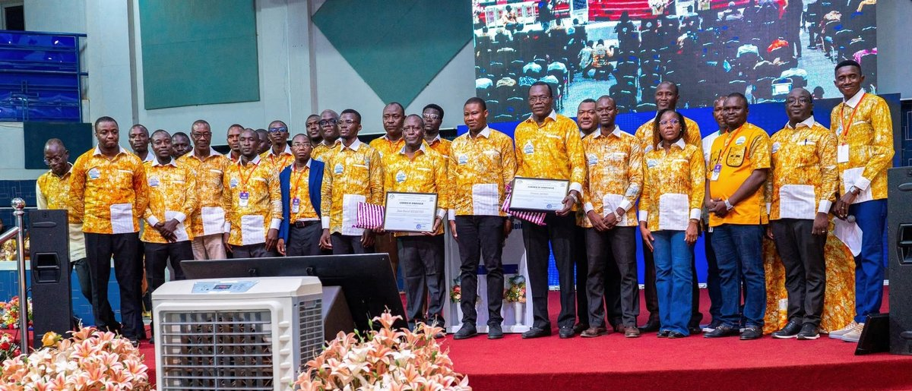
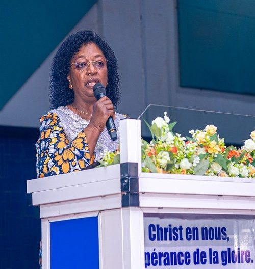

De 2006 à 2026, douze éditions ont façonné une génération. Retour sur la genèse d'un cadre de formation, la prière d'action de grâces qui a ouvert cette édition anniversaire, et les voix qui ont marqué la cérémonie d'ouverture.

Depuis sa création en 2006, les UJ ont abordé les thématiques suivantes :
Chaque édition des UJ a porté un mot d'ordre distinct — une promesse, une étape. Faites défiler pour parcourir deux décennies de thématiques.

Dans cette prière, le Pasteur Serge Samandoulgou, Coordonnateur national du Mouvement des Jeunes du CIE/MIA, a exprimé sa reconnaissance à Dieu par des actions de grâce et rendu hommage aux parents spirituels, aux parrains des éditions passées puis aux pionniers des Universités des Jeunes. Il a également exprimé sa gratitude aux aînés ayant soutenu l'œuvre par leurs prières, leurs conseils et leurs sacrifices. Ce temps s'est conclu par une remise d'attestation et de symboliques présents aux bien-aimés ancien Coordonnateur national et ancien Secrétaire général du Mouvement des Jeunes du CIE/MIA, respectivement Firmin SOME et Jean-Pascal BASSONO en guise de reconnaissance pour leur leadership.
Ce mardi 25 août 2026, EDEN-TBI a ouvert ses portes à la 13e édition des Universités des Jeunes (UJ) du CIE/MIA, marquant le coup d'envoi de ce temps d'équipement de la jeunesse.
Placée sous le thème « Jeunes conquérants vainqueurs, connaissons en vérité notre Dieu, agissons avec fermeté dans l'affirmation de notre identité en Christ », cette édition rassemble environ 8 000 jeunes venus du Burkina Faso, d'Afrique et d'Europe.
Sous le marrainage de Dr Hortense KARAMBIRI, Pasteur principal d'EDEN-TBI, cette cérémonie a été marquée par la présence de plusieurs personnalités dont le Patriarche Mamadou Philippe KARAMBIRI, Fondateur délégué du CIE/MIA et initiateur des UJ, et Son Excellence Tertius Zongo, Conseiller spécial de la Jeunesse du CIE-MIA.
Prenant la parole, le PCO Achille TIENTEGA a souhaité la bienvenue à tous les participants avant de situer le contexte de cette édition des UJ. Il a ensuite présenté les deux grands axes de l'événement. Le premier axe est consacré aux enseignements bibliques en lien avec le thème des UJ ainsi qu'aux différents temps de prière et d'édification spirituelle. Le second axe porte sur les ateliers, les conférences thématiques et l'action citoyenne prévue à Faso Mêbo. Pour cette édition, plusieurs orateurs dont, le Bishop Daniel Fulbert N'CHO, le Pasteur Oumarou Josué OUEDRAOGO et l'Enseignant Amen KOSSI sont au programme.

La marraine de cette 13e édition à l'entame de son discours adressé à ses filleuls, exprime sa reconnaissance à Dieu, tout en saluant l'initiateur de ce cadre de rassemblement de la jeunesse du CIE/MIA en particulier et de l'Église corps de Christ en général. Pour elle, plus qu'un slogan, le thème de cette édition est un appel à la connaissance véritable de son Dieu par une relation personnelle et vivante ; un appel à assumer pleinement son identité en Christ. Poursuivant son adresse à la jeunesse, la marraine précise qu'être « jeune conquérant vainqueur » ne consiste nullement à conquérir les autres, mais à d'abord conquérir ses propres peurs, ses doutes, ses compromis et ses limites. C'est seulement ce modèle de jeune conquérant vainqueur qui constitue non seulement une force pour l'Église d'aujourd'hui, mais également l'avenir de l'Église de demain ; portant ainsi le flambeau de la foi avec intelligence, courage, intégrité et détermination. Pour clore son propos, elle encourage la jeunesse à être des ambassadeurs du Royaume de Dieu.
Cette 13e édition, débutée ce 25 août se veut un temps privilégié de formation, d'enseignement et de communion fraternelle. La cérémonie d'ouverture s'est achevée dans une ambiance conviviale marquée par la détermination de la jeunesse à être des ambassadeurs pour Christ.
Message introductif : « Le décollage de l'Afrique commence par une jeunesse préparée »
Le pasteur Serge Samandoulgou a rappelé qu'avant 2006, la jeunesse disposait de peu de cadres réellement dédiés à son équipement, souvent sollicitée pour servir sans être suffisamment préparée aux défis spirituels et professionnels de son temps. C'est cette réalité qui a conduit le pasteur Mamadou Philippe KARAMBIRI, Fondateur Délégué du CIE/MIA à vouloir transmettre à la jeunesse ce que Dieu avait déposé en lui.
S'appuyant sur les paroles prophétiques reçues par notre père spirituel pour la décennie 2020-2030 — celles d'une Afrique appelée à se développer et d'un déclic annoncé au niveau de la jeunesse — le Coordonnateur national des Jeunes a exhorté les participants à se préparer sérieusement pour être des acteurs du décollage de l'Afrique. Dans cette perspective, il a invité chacun à se questionner sur sa contribution réelle à la manifestation de ce décollage.
Il a illustré son propos par le récit de Genèse 15:13 : Dieu avait annoncé à Abraham quatre cents ans de servitude pour sa descendance, mais faute de préparation, cette période s'est prolongée à quatre cent trente ans. Revenant sur les premiers versets de Genèse 1:1-3, il a souligné que Dieu ne bénit pas le désordre, et que recevoir la Parole de Dieu pendant les Universités des Jeunes suppose d'abord d'accepter que son ordre s'installe dans nos vies par le mouvement du Saint-Esprit.
« Dieu ne bénit pas le désordre. »Pasteur Serge Samandoulgou
Cette ouverture officielle des Universités des Jeunes du Mouvement des Jeunes du CIE-MIA a connu également l'intervention du Fondateur délégué, le Pasteur Mamadou Philippe KARAMBIRI porté pour l'essentiel sur le témoignage de sa vie. Le père spirituel rassure les jeunes : Vous n'êtes pas nés pour échouer, vous avez de l'avenir.
Ainsi, en parlant de vocation et de l'avenir de l'Afrique, le pasteur Mamadou Philippe KARAMBIRI est revenu sur son propre parcours. En effet, dès son enfance, le patriarche affirme avoir refusé de penser à l'échec et à la pauvreté. Pour lui, les conditions dans lesquelles une personne commence sa vie ne déterminent pas son avenir. Derrière ce récit, cette conviction traverse toute son intervention. Son parcours personnel devient ainsi le point central de son adresse à la jeunesse. Elle s'appuie notamment sur la foi biblique : après que Dieu ait créé et béni la terre, il ne peut plus y avoir un pays ou un continent destiné à la pauvreté.
Pour le Patriarche si l'Amérique, l'Europe, l'Asie et l'Océanie ont connu leur développement, il n'y a aucun doute, l'Afrique aussi va connaître son développement. Ce décollage, il l'avait annoncé à l'orée de la décennie 2020-2030 au cours d'un séminaire au Bénin en de termes on ne peut plus clairs :
« L'Afrique va décoller obligatoirement dans cette décennie. »Pasteur Mamadou Philippe Karambiri
Cette prophétie en cours d'accomplissement a été rappelée à la jeunesse par une courte vidéo diffusée au cours de son intervention. Les UJ s'offrent alors comme un cadre de préparation de la jeunesse pour être des acteurs de la manifestation de cette prophétie en vue d'une transformation de l'Afrique.
De son histoire personnelle à sa vision pour le continent, le pasteur Mamadou Philippe KARAMBIRI dessine ainsi une même trajectoire : croire en une destinée gracieuse, se préparer et agir avec foi pour un avenir radieux.